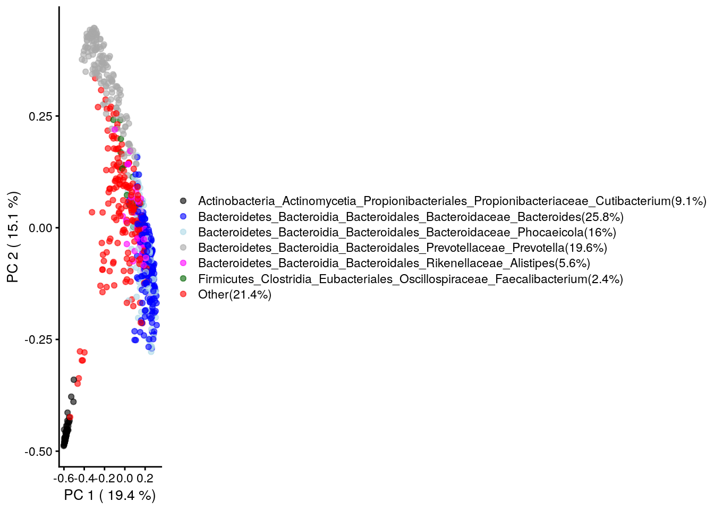
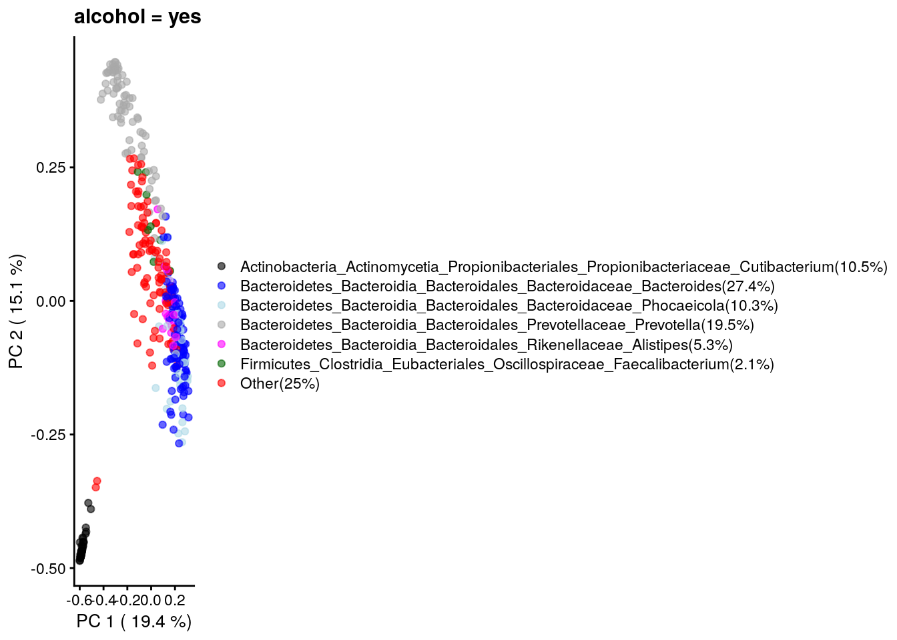
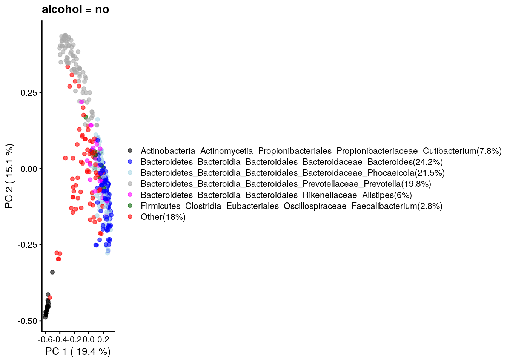
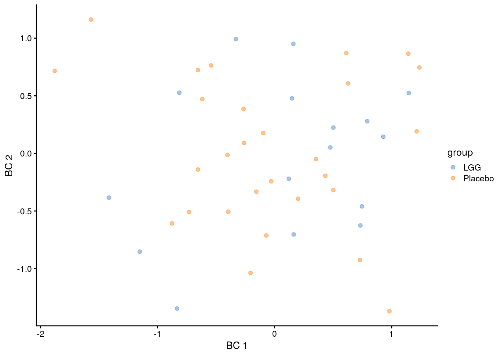

Chapter 8 Beta Diversity
Where alpha diversity focuses on community variation within a community (sample), beta diversity quantifies (dis-)similarites between communities (samples). Some of the most popular beta diversity measures in microbiome research include Bray-Curtis index (for compositional data), Jaccard index (for presence / absence data, ignoring abundance information), Aitchison distance (Euclidean distance for clr transformed abundances, aiming to avoid the compositionality bias), and the Unifrac distances (that take into account the phylogenetic tree information). Only some of the commonly used beta diversity measures are actual distances; this is a mathematically well-defined concept and many ecological beta diversity measures, such as Bray-Curtis index, are not proper distances. Therefore, the term dissimilarity or beta diversity is commonly used.
Technically, beta diversities are usually represented as dist
objects, which contain triangular data describing the distance between
each pair of samples. These distances can be further subjected to
ordination. Ordination is a common concept in ecology that aims to
reduce the dimensionality of the data for further evaluation or
visualization. Ordination techniques aim to capture as much of
essential information in the data as possible in a lower dimensional
representation. Dimension reduction is bound to loose information but
the common ordination techniques aim to preserve relevant information
of sample similarities in an optimal way, which is defined in
different ways by different methods. [TODO add references and/or link
to ordination chapter instead?]
Some of the most common ordination methods in microbiome research include Principal Component Analysis (PCA), metric and non-metric multi-dimensional scaling (MDS, NMDS), The MDS methods are also known as Principal Coordinates Analysis (PCoA). Other recently popular techniques include t-SNE and UMAP.
8.1 Explained variance
The percentage of explained variance is typically shown for PCA ordination plots. This quantifies the proportion of overall variance in the data that is captured by the PCA axes, or how well the ordination axes reflect the original distances.
Sometimes a similar measure is shown for MDS/PCoA. The interpretation is generally different, however, and hence we do not recommend using it. PCA is a special case of PCoA with Euclidean distances. With non-Euclidean dissimilarities PCoA uses a trick where the pointwise dissimilarities are first cast into similarities in a Euclidean space (with some information loss i.e. stress) and then projected to the maximal variance axes. In this case, the maximal variance axes do not directly reflect the correspondence of the projected distances and original distances, as they do for PCA.
In typical use cases, we would like to know how well the ordination reflects the original similarity structures; then the quantity of interest is the so-called “stress” function, which measures the difference in pairwise similarities between the data points in the original (high-dimensional) vs. projected (low-dimensional) space.
Hence, we propose that for PCoA and other ordination methods, users would report relative stress (varies in the unit interval; the smaller the better). This can be calculated as shown below. For further examples, check the note from Huber lab.
# Example data
library(mia)
data(GlobalPatterns, package="mia")
# Data matrix (features x samples)
x <- GlobalPatterns
x <- transformCounts(x, method = "relabundance")
x <- assay(x, "relabundance")
# Quantify dissimilarities in the original feature space
library(vegan)
d0 <- as.matrix(vegdist(t(x), "bray"))
# PCoA Ordination
pcoa <- as.data.frame(cmdscale(d0, k = 2))
names(pcoa) <- c("PCoA1", "PCoA2")
# Quantify dissimilarities in the ordination space
dp <- as.matrix(dist(pcoa))
# Calculate stress i.e. relative difference in the original and
# projected dissimilarities
stress <- sum((dp - d0)^2)/sum(d0^2)Shepard plot visualizes the original versus projected (ordination) dissimilarities between the data points:
ord <- order(as.vector(d0))
df <- data.frame(d0 = as.vector(d0)[ord],
dmds = as.vector(dp)[ord])
library(ggplot2)
ggplot(aes(x = d0, y = dmds), data=df) +
geom_smooth() +
geom_point() +
labs(title = "Shepard plot",
x = "Original distance",
y = "MDS distance",
subtitle = paste("Stress:", round(stress, 2))) +
theme_bw()
8.2 Estimating beta diversity
In the following examples dissimilarities are calculated by
functions supplied to the FUN argument. This function can be defined by
the user. It must return a dist function, which can then be used to
calculate reduced dimensions either via ordination methods (such as MDS
or NMDS), and the results can be stored in the reducedDim.
This entire process is wrapped in the runMDS and runNMDS
functions.
library(scater)
se <- GlobalPatterns
se <- runMDS(se, FUN = vegan::vegdist, name = "MDS_BC", exprs_values = "counts")Sample similarities can be visualized on a lower-dimensional display
(typically 2D) using the plotReducedDim function in the
scater package. This provides also further tools to incorporate
additional information using variations in color, shape or size.
# Create ggplot object
p <- plotReducedDim(se, "MDS_BC", colour_by = "SampleType")
# Add explained variance for each axis
e <- attr(reducedDim(se, "MDS_BC"), "eig");
rel_eig <- e/sum(e[e>0])
p <- p + labs(x = paste("PCoA 1 (", round(100 * rel_eig[[1]],1), "%", ")", sep = ""),
y = paste("PCoA 2 (", round(100 * rel_eig[[2]],1), "%", ")", sep = ""))
print(p)
Figure 8.1: MDS plot based on the Bray-Curtis distances on the GlobalPattern dataset.
With additional tools from the ggplot2 universe, comparisons can be
performed informing on the applicability to visualize sample similarities in a
meaningful way.
se <- runMDS(se, FUN = vegan::vegdist, name = "MDS_euclidean",
method = "euclidean", exprs_values = "counts")
se <- runNMDS(se, FUN = vegan::vegdist, name = "NMDS_BC")## initial value 47.733208
## iter 5 value 33.853364
## iter 10 value 32.891200
## final value 32.823570
## convergedse <- runNMDS(se, FUN = vegan::vegdist, name = "NMDS_euclidean",
method = "euclidean")## initial value 31.882673
## final value 31.882673
## convergedplots <- lapply(c("MDS_BC","MDS_euclidean","NMDS_BC","NMDS_euclidean"),
plotReducedDim, object = se, colour_by = "SampleType")
ggpubr::ggarrange(plotlist = plots, nrow = 2, ncol = 2, common.legend = TRUE,
legend = "right")
Figure 8.2: Comparison of MDS and NMDS plots based on the Bray-Curtis or euclidean distances on the GlobalPattern dataset.
The UniFrac method is a special case, as it requires data on the
relationship of features in form on a phylo tree. calculateUniFrac
performs the calculation to return a dist object, which can again be
used within runMDS.
se <- runMDS(se, FUN = calculateUniFrac, name = "UniFrac",
tree = rowTree(se),
ntop = nrow(se),
exprs_values = "counts")plotReducedDim(se, "UniFrac", colour_by = "SampleType")
Figure 8.3: UniFrac distances scaled by MDS of the GlobalPattern dataset.
8.3 Other ordination methods
Other dimension reduction methods, such as PCA, t-SNE and UMAP are
inherited directly from the scater package.
se <- runPCA(se, name = "PCA", exprs_values = "counts", ncomponents = 10)plotReducedDim(se, "PCA", colour_by = "SampleType")
Figure 8.4: PCA plot on the GlobalPatterns data set containing sample from different sources.
As mentioned before, applicability of the different methods depends on your sample set.
FIXME: let us switch to UMAP for the examples?
se <- runTSNE(se, name = "TSNE", exprs_values = "counts", ncomponents = 3)plotReducedDim(se, "TSNE", colour_by = "SampleType", ncomponents = c(1:3))Figure 8.5: t-SNE plot on the GlobalPatterns data set containing sample from different sources.
8.4 Visualizing the most dominant genus on PCoA
In this section we visualize most dominant genus in the alcohol study dataset from curatedMetagenomicData on PCoA. A similar visualization has been used in Taxonomic signatures of cause-specific mortality risk in human gut microbiome, Salosensaari et al. (2021).
# Installing the package
if (!require(curatedMetagenomicData)){
BiocManager::install("curatedMetagenomicData")
}Retrieving data as a TreeSummarizedExperiment object.
library(curatedMetagenomicData)
library(dplyr)
library(DT)
# Querying the data
tse <- sampleMetadata %>%
filter(age >= 18) %>% # taking only data of age 18 or above
filter(!is.na(alcohol)) %>% # excluding missing values
returnSamples("relative_abundance")
tse## class: TreeSummarizedExperiment
## dim: 1057 780
## metadata(0):
## assays(1): relative_abundance
## rownames(1057):
## k__Bacteria|p__Actinobacteria|c__Actinobacteria|o__Propionibacteriales|f__Propionibacteriaceae|g__Cutibacterium|s__Cutibacterium_acnes
## k__Bacteria|p__Proteobacteria|c__Gammaproteobacteria|o__Enterobacterales|f__Enterobacteriaceae|g__Klebsiella|s__Klebsiella_pneumoniae
## ...
## k__Bacteria|p__Firmicutes|c__Clostridia|o__Clostridiales|f__Lachnospiraceae|g__Anaerostipes|s__Anaerostipes_sp_494a
## k__Bacteria|p__Bacteroidetes|c__Bacteroidia|o__Bacteroidales|f__Barnesiellaceae|g__Barnesiella|s__Barnesiella_viscericola
## rowData names(7): Kingdom Phylum ... Genus Species
## colnames(780): WBE003 WBE004 ... YSZC12003_37879 YSZC12003_37880
## colData names(129): study_name subject_id ... ALT eGFR
## reducedDimNames(0):
## mainExpName: NULL
## altExpNames(0):
## rowLinks: a LinkDataFrame (1057 rows)
## rowTree: 1 phylo tree(s) (10430 leaves)
## colLinks: NULL
## colTree: NULLAgglomerating the data at a Genus level and getting the dominant taxa per sample.
tse_Genus <- agglomerateByRank(tse, rank="Genus")
tse_Genus <- addPerSampleDominantTaxa(tse_Genus,abund_values="relative_abundance", name = "dominant_taxa")Performing PCoA with Bray-Curtis dissimilarity.
tse_Genus <- runMDS(tse_Genus, FUN = vegan::vegdist,
name = "PCoA_BC", exprs_values = "relative_abundance")Getting top taxa and visualizing the abundance on PCoA.
# Getting the top taxa
top_taxa <- getTopTaxa(tse_Genus,top = 6, abund_values = "relative_abundance")
# Naming all the rest of non top-taxa as "Other"
most_abundant <- lapply(colData(tse_Genus)$dominant_taxa,
function(x){if (x %in% top_taxa) {x} else {"Other"}})
# Storing the previous results as a new column within colData
colData(tse_Genus)$most_abundant <- as.character(most_abundant)
# Calculating percentage of the most abundant
most_abundant_freq <- table(as.character(most_abundant))
most_abundant_percent <- round(most_abundant_freq/sum(most_abundant_freq)*100, 1)
# Retrieving the explained variance
e <- attr(reducedDim(tse_Genus, "PCoA_BC"), "eig");
var_explained <- e/sum(e[e>0])*100
# Visualization
plot <-plotReducedDim(tse_Genus,"PCoA_BC", colour_by = "most_abundant") +
scale_colour_manual(values = c("black", "blue", "lightblue", "darkgray", "magenta", "darkgreen", "red"),
labels=paste0(names(most_abundant_percent),"(",most_abundant_percent,"%)"))+
labs(x=paste("PC 1 (",round(var_explained[1],1),"%)"),
y=paste("PC 2 (",round(var_explained[2],1),"%)"),
color="")
plot
Note: A 3D interactive version of the earlier plot can be found from here.
Similarly let’s visualize and compare the alcohol sub-polulation.
# Calculating the frequencies and percentages for both categories
freq_yes <- table(as.character(most_abundant[colData(tse_Genus)$alcohol=="yes"]))
freq_no <- table(as.character(most_abundant[colData(tse_Genus)$alcohol=="no"]))
percent_yes <- round(freq_yes/sum(freq_yes)*100, 1)
percent_no <- round(freq_no/sum(freq_no)*100, 1)
# Visualization
plotReducedDim(tse_Genus[,colData(tse_Genus)$alcohol=="yes"],
"PCoA_BC", colour_by = "most_abundant") +
scale_colour_manual(values = c("black", "blue", "lightblue", "darkgray", "magenta", "darkgreen", "red"),
labels=paste0(names(percent_yes),"(",percent_yes,"%)"))+
labs(x=paste("PC 1 (",round(var_explained[1],1),"%)"),
y=paste("PC 2 (",round(var_explained[2],1),"%)"),
title = "alcohol = yes", color="")
plotReducedDim(tse_Genus[,colData(tse_Genus)$alcohol=="no"],
"PCoA_BC", colour_by = "most_abundant") +
scale_colour_manual(values = c("black", "blue", "lightblue", "darkgray", "magenta", "darkgreen", "red"),
labels=paste0(names(percent_no),"(",percent_no,"%)"))+
labs(x=paste("PC 1 (",round(var_explained[1],1),"%)"),
y=paste("PC 2 (",round(var_explained[2],1),"%)"),
title = "alcohol = no", color="")
8.5 Community comparisons [TODO combine with the material above for simplicity?]
A typical comparison of community composition starts with a visual comparison of the groups on a 2D ordination.
Let us load an example data set:
library(microbiomeDataSets)
se.lahti <- LahtiMData()Then we estimate relative abundances and MDS ordination based on Bray-Curtis (BC) dissimilarity between the groups, and visualize the results.
se.lahti <- relAbundanceCounts(se.lahti)
se.lahti <- runNMDS(se.lahti, FUN = vegan::vegdist, name = "BC", nmdsFUN = "monoMDS",
exprs_values = "relabundance",
keep_dist = TRUE)plotReducedDim(se.lahti, "BC", colour_by = "group")
No clear difference between the groups can be visually observed.
8.5.1 Testing differences in community composition between sample groups
The permutational analysis of variance (PERMANOVA) (Anderson 2001) is a widely used non-parametric multivariate method that can be used to estimate the actual statistical significance of differences in the observed community composition between two groups of samples.
PERMANOVA evaluates the hypothesis that the centroids and dispersion of the community are equivalent between the compared groups. A small p-value indicates that the compared groups have, on average, a different community composition.
This method is implemented in the vegan package (function adonis).
library(vegan)
permanova <- vegan::adonis(t(assay(se.lahti,"relabundance")) ~ group,
data = colData(se.lahti),
permutations = 9999)
# P-value
print(as.data.frame(permanova$aov.tab)["group", "Pr(>F)"])## [1] 0.2743In this case, the community composition is not significantly different between the groups.
Let us visualize the model coefficients for species that exhibit the largest differences between the groups. This gives some insights into how the groups tend to differ from each other in terms of community composition.
coef <- coefficients(permanova)["group1",]
top.coef <- sort(head(coef[rev(order(abs(coef)))],20))ggplot(data.frame(x = top.coef,
y = factor(names(top.coef),
unique(names(top.coef)))),
aes(x = x, y = y)) +
geom_bar(stat="identity") +
labs(x="",y="",title="Top Taxa") +
theme_bw()
In the above example, the largest differences between the two groups can be attributed to Bacteroides intestinalis (elevated in the first group) and Faecalibacterium prausnitzii (elevated in the second group), and many other co-varying species.
8.5.2 Checking the homogeneity condition
It is important to note that the application of PERMANOVA assumes homogeneous group dispersions (variances). This can be tested with the PERMDISP2 method (Anderson 2006).
anova(vegan::betadisper(attr(reducedDim(se.lahti,"BC"),"dist"),
colData(se.lahti)$group))## Analysis of Variance Table
##
## Response: Distances
## Df Sum Sq Mean Sq F value Pr(>F)
## Groups 1 0.000 0.00002 0 0.95
## Residuals 42 0.158 0.00376In our example, the groups have similar dispersion, and PERMANOVA is an appropriate choice for comparing community compositions.
8.6 Further reading
In certain settings, beta diversities might be used to group samples without prior knowledge. For this we want to point to excellent resources on how to extract information from the clusters.
See also community typing.
Session Info
R version 4.1.0 (2021-05-18)
Platform: x86_64-pc-linux-gnu (64-bit)
Running under: Ubuntu 20.04.2 LTS
Matrix products: default
BLAS/LAPACK: /usr/lib/x86_64-linux-gnu/openblas-pthread/libopenblasp-r0.3.8.so
locale:
[1] LC_CTYPE=en_US.UTF-8 LC_NUMERIC=C
[3] LC_TIME=en_US.UTF-8 LC_COLLATE=en_US.UTF-8
[5] LC_MONETARY=en_US.UTF-8 LC_MESSAGES=C
[7] LC_PAPER=en_US.UTF-8 LC_NAME=C
[9] LC_ADDRESS=C LC_TELEPHONE=C
[11] LC_MEASUREMENT=en_US.UTF-8 LC_IDENTIFICATION=C
attached base packages:
[1] stats4 stats graphics grDevices utils datasets methods
[8] base
other attached packages:
[1] microbiomeDataSets_1.1.1 MultiAssayExperiment_1.19.5
[3] DT_0.18 dplyr_1.0.7
[5] curatedMetagenomicData_3.1.1 scater_1.21.3
[7] scuttle_1.3.1 ggplot2_3.3.5
[9] vegan_2.5-7 lattice_0.20-44
[11] permute_0.9-5 mia_1.1.10
[13] TreeSummarizedExperiment_2.1.4 Biostrings_2.61.2
[15] XVector_0.33.0 SingleCellExperiment_1.15.1
[17] SummarizedExperiment_1.23.1 Biobase_2.53.0
[19] GenomicRanges_1.45.0 GenomeInfoDb_1.29.3
[21] IRanges_2.27.0 S4Vectors_0.31.0
[23] BiocGenerics_0.39.1 MatrixGenerics_1.5.3
[25] matrixStats_0.60.0 BiocStyle_2.21.3
[27] rebook_1.3.0
loaded via a namespace (and not attached):
[1] readxl_1.3.1 backports_1.2.1
[3] AnnotationHub_3.1.5 BiocFileCache_2.1.1
[5] plyr_1.8.6 lazyeval_0.2.2
[7] splines_4.1.0 BiocParallel_1.27.3
[9] digest_0.6.27 htmltools_0.5.1.1
[11] viridis_0.6.1 fansi_0.5.0
[13] magrittr_2.0.1 memoise_2.0.0
[15] ScaledMatrix_1.1.0 cluster_2.1.2
[17] DECIPHER_2.21.0 openxlsx_4.2.4
[19] colorspace_2.0-2 rappdirs_0.3.3
[21] blob_1.2.2 ggrepel_0.9.1
[23] haven_2.4.3 xfun_0.25
[25] crayon_1.4.1 RCurl_1.98-1.3
[27] jsonlite_1.7.2 graph_1.71.2
[29] ape_5.5 glue_1.4.2
[31] gtable_0.3.0 zlibbioc_1.39.0
[33] DelayedArray_0.19.1 car_3.0-11
[35] BiocSingular_1.9.1 abind_1.4-5
[37] scales_1.1.1 DBI_1.1.1
[39] rstatix_0.7.0 Rcpp_1.0.7
[41] xtable_1.8-4 viridisLite_0.4.0
[43] decontam_1.13.0 tidytree_0.3.4
[45] foreign_0.8-81 bit_4.0.4
[47] rsvd_1.0.5 htmlwidgets_1.5.3
[49] httr_1.4.2 dir.expiry_1.1.0
[51] ellipsis_0.3.2 pkgconfig_2.0.3
[53] XML_3.99-0.6 farver_2.1.0
[55] dbplyr_2.1.1 CodeDepends_0.6.5
[57] sass_0.4.0 utf8_1.2.2
[59] AnnotationDbi_1.55.1 later_1.2.0
[61] tidyselect_1.1.1 labeling_0.4.2
[63] rlang_0.4.11 reshape2_1.4.4
[65] BiocVersion_3.14.0 cellranger_1.1.0
[67] munsell_0.5.0 tools_4.1.0
[69] cachem_1.0.5 ExperimentHub_2.1.4
[71] DirichletMultinomial_1.35.0 generics_0.1.0
[73] RSQLite_2.2.7 broom_0.7.9
[75] evaluate_0.14 stringr_1.4.0
[77] fastmap_1.1.0 yaml_2.2.1
[79] knitr_1.33 bit64_4.0.5
[81] zip_2.2.0 purrr_0.3.4
[83] KEGGREST_1.33.0 nlme_3.1-152
[85] sparseMatrixStats_1.5.2 mime_0.11
[87] compiler_4.1.0 png_0.1-7
[89] interactiveDisplayBase_1.31.2 beeswarm_0.4.0
[91] filelock_1.0.2 curl_4.3.2
[93] ggsignif_0.6.2 treeio_1.17.2
[95] tibble_3.1.3 bslib_0.2.5.1
[97] stringi_1.7.3 highr_0.9
[99] forcats_0.5.1 Matrix_1.3-4
[101] vctrs_0.3.8 pillar_1.6.2
[103] lifecycle_1.0.0 BiocManager_1.30.16
[105] jquerylib_0.1.4 BiocNeighbors_1.11.0
[107] data.table_1.14.0 cowplot_1.1.1
[109] bitops_1.0-7 irlba_2.3.3
[111] httpuv_1.6.1 R6_2.5.0
[113] promises_1.2.0.1 bookdown_0.22
[115] gridExtra_2.3 rio_0.5.27
[117] vipor_0.4.5 codetools_0.2-18
[119] MASS_7.3-54 assertthat_0.2.1
[121] withr_2.4.2 GenomeInfoDbData_1.2.6
[123] mgcv_1.8-36 parallel_4.1.0
[125] hms_1.1.0 grid_4.1.0
[127] beachmat_2.9.1 tidyr_1.1.3
[129] rmarkdown_2.10 DelayedMatrixStats_1.15.2
[131] carData_3.0-4 Rtsne_0.15
[133] ggpubr_0.4.0 shiny_1.6.0
[135] ggbeeswarm_0.6.0